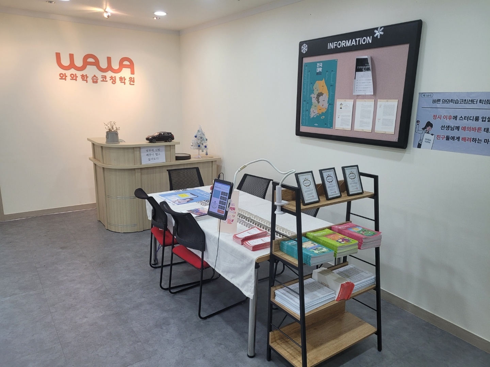
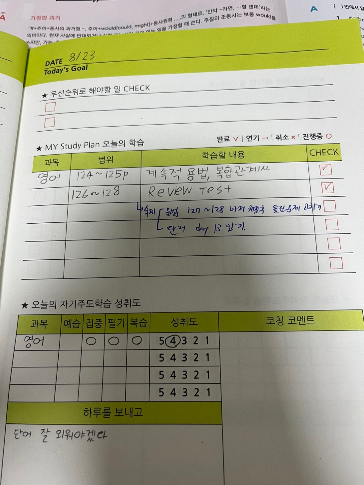

안녕하세요, 인천광역시 부평구 삼산동의 와와학습코칭 인천삼산점입니다. 체육관로에 면한 센터로, 인천굴포초등학교(굴포초)·인천진산초등학교(진산초)·인천영선초등학교(영선초) 아이들이 자라서 진산중학교(진산중)·삼산중학교(삼산중)·구산중학교(구산중)로, 다시 인천영선고등학교(영선고)·삼산고등학교(삼산고)로 이어지는 동네입니다.
오늘은 센터에 들어오면 제일 먼저 보이는 벽 이야기를 해 보겠습니다. 위 사진 오른쪽, INFORMATION이라고 적힌 게시판입니다.
게시판 왼쪽 절반이 전국 대학 지도입니다
게시판은 크게 두 부분으로 나뉩니다. 오른쪽에는 안내 문서들이 붙어 있고, 왼쪽 절반은 전국 대학 지도가 차지하고 있습니다. 대한민국 지도 위에 지역별로 대학이 표시된 종류의 지도입니다.
상담을 오신 부모님들이 가끔 물으십니다. 중학생 다니는 곳에 대학 지도가 왜 붙어 있느냐고요.
이유는 간단합니다. 아이들이 대학을 ‘이름’으로만 알고 있기 때문입니다. 들어는 봤는데 어디 있는 학교인지 모릅니다. 집에서 두 시간 거리인지 네 시간 거리인지, 통학이 되는지 기숙사를 써야 하는지 감이 없습니다. 그래서 목표라는 말이 아이 입에서 나와도 실감이 없습니다.
지도는 그 감을 만들어 줍니다. 손가락으로 인천을 짚고, 거기서 말하고 있는 학교까지 선을 그어 보면 거리가 몸으로 들어옵니다. 그때부터 대화가 달라집니다.
다만 지도만 붙여 두면 벽지가 됩니다
솔직히 말씀드리면, 지도 한 장으로 성적이 오르지는 않습니다. 붙여만 놓으면 일주일 만에 벽지가 됩니다. 아이들은 처음 며칠 들여다보다 곧 지나쳐 갑니다.
저희가 이 게시판을 상담 테이블 바로 옆에 둔 이유가 여기 있습니다. 지도는 보라고 붙인 게 아니라 짚으면서 이야기하려고 붙인 것입니다.
아이와 마주 앉아 지도를 짚을 때 저희가 묻는 것은 어느 대학에 가고 싶으냐가 아닙니다. 그 질문은 대개 답이 안 나옵니다. 대신 이렇게 묻습니다.
- 집에서 다닐 수 있는 거리에는 어디가 있을까 — 현실 감각이 먼저 생깁니다.
- 멀리 떨어진 곳도 괜찮아, 아니면 집에서 다니고 싶어 — 아이가 자기 생활을 처음 상상해 봅니다.
- 그럼 거기 가려면 지금 무슨 과목을 붙잡아야 할까 — 여기서 대화가 오늘로 돌아옵니다.
마지막 질문이 핵심입니다. 목표를 세우는 일의 목적은 목표를 정하는 것이 아니라 오늘 할 일을 정하는 것입니다. 그게 안 되면 목표는 부담만 남기고 사라집니다.
게시판 아래 진열대에 교재를 함께 둔 것도 같은 뜻입니다. 지도에서 눈을 내리면 바로 지금 푸는 책이 보이게 해 둔 것입니다.

그 ‘오늘 한 칸’이 이렇게 생겼습니다
위 사진은 실제로 아이가 쓴 플래너 한 장입니다. 대학 지도에서 시작한 이야기가 내려앉는 자리가 여기입니다.
표를 보시면 칸이 과목 / 범위 / 학습할 내용 / 체크로 나뉘어 있습니다. 저희가 아이들에게 제일 많이 고쳐 주는 칸은 학습할 내용 칸입니다.
아이들이 처음 플래너를 쓰면 이 칸에 대개 영어 숙제, 수학 진도라고 적습니다. 이렇게 적으면 나중에 아무 쓸모가 없습니다. 무엇을 했는지 본인도 기억하지 못하기 때문입니다.
사진 속 플래너는 이렇게 적혀 있습니다. 범위 칸에 124~125p, 학습할 내용 칸에 계속적 용법, 복합관계사. 그 아래 줄에는 범위 126~128, 내용 Review Test.
차이가 보이실 겁니다. 어디까지 했는지(범위)와 무엇을 했는지(개념)가 함께 적혀 있습니다.
이게 왜 중요한가 하면, 시험 앞두고 되돌아볼 때 쓸 수 있는 기록이 되기 때문입니다. 관계대명사 계속적 용법이 헷갈린다는 걸 알았을 때, 내가 그걸 언제 어느 페이지에서 배웠는지 플래너를 넘기면 바로 나옵니다. 다시 찾아갈 수 있는 기록과 그냥 지나간 기록의 차이입니다.
숙제는 줄을 따로 빼서 적게 합니다
같은 사진에서 한 가지만 더 보겠습니다. Review Test 줄 아래에 파란 펜으로 화살표를 그어 칸을 따로 만들고, 거기에 숙제 두 가지가 적혀 있습니다. 문법 127~128 마저 채점하고 틀린 문제 고치기, 그리고 단어 day 13 암기.
오늘 배운 것과 오늘 집에 가서 할 것을 한 줄에 섞어 적지 않고 아래로 빼서 적은 것입니다. 별것 아닌 것 같지만 아이들이 숙제를 빠뜨리는 가장 흔한 이유가 여기 있습니다. 배운 것과 해야 할 것이 뒤섞여 있으면 눈에 안 들어옵니다.
그리고 숙제 내용을 보시면 마저 채점하고 틀린 문제 고치기입니다. 문제를 푸는 것까지가 아니라 채점하고 고치는 것까지가 숙제로 적혀 있습니다. 채점을 안 하고 덮는 아이가 정말 많습니다. 틀린 걸 확인하지 않으면 푼 시간이 통째로 사라집니다.
플래너 맨 아래에는 하루를 보내고 한 줄 적는 칸이 있습니다. 그날 아이가 적은 문장은 단어 잘 외워야겠다였습니다. 대단한 다짐은 아닙니다. 그런데 이런 문장이 쌓이면 아이가 자기 약한 곳을 스스로 알게 됩니다. 선생님이 단어가 약하다고 백 번 말하는 것보다 자기가 한 번 적는 편이 훨씬 오래갑니다.
집에서 오늘부터 해 보실 수 있는 것
- 대한민국 지도를 한 번 펴 보세요 — 거창한 진로 대화가 아니어도 됩니다. 아이가 이름만 아는 학교가 어디쯤 있는지 같이 찾아보는 것으로 충분합니다. 거리 감각이 생기면 목표가 막연함에서 조금 벗어납니다.
- 플래너에 ‘무엇을’을 적게 하세요 — 수학 숙제가 아니라 이차함수 그래프 평행이동이라고 적게 해 보세요. 한 단어라도 개념 이름이 들어가야 나중에 쓸 수 있는 기록이 됩니다.
- 숙제는 줄을 바꿔서 적게 하세요 — 오늘 배운 것 아래에 한 칸 띄우고 적는 것만으로도 빠뜨리는 일이 줄어듭니다.
- 채점까지를 숙제라고 정해 주세요 — 다 풀었어가 아니라 채점하고 틀린 것 고쳤어까지 물어봐 주세요. 이 한마디가 공부 시간의 질을 바꿉니다.
인천삼산점 찾아오시는 길
와와학습코칭 인천삼산점은 인천광역시 부평구 체육관로 32, 하이존빌딩 8층 802호에 있습니다. 인천굴포초등학교·인천진산초등학교·인천영선초등학교와 진산중학교·삼산중학교·구산중학교, 인천영선고등학교·삼산고등학교 학생들이 오가기 좋은 자리입니다.
학습 진단과 상담은 무료입니다. 오실 때 아이가 쓰던 플래너나 공책이 있으면 함께 가져와 주세요. 지금 무엇을 어떻게 적고 있는지만 봐도, 어디부터 손을 대야 할지 같이 짚어 드릴 수 있습니다.